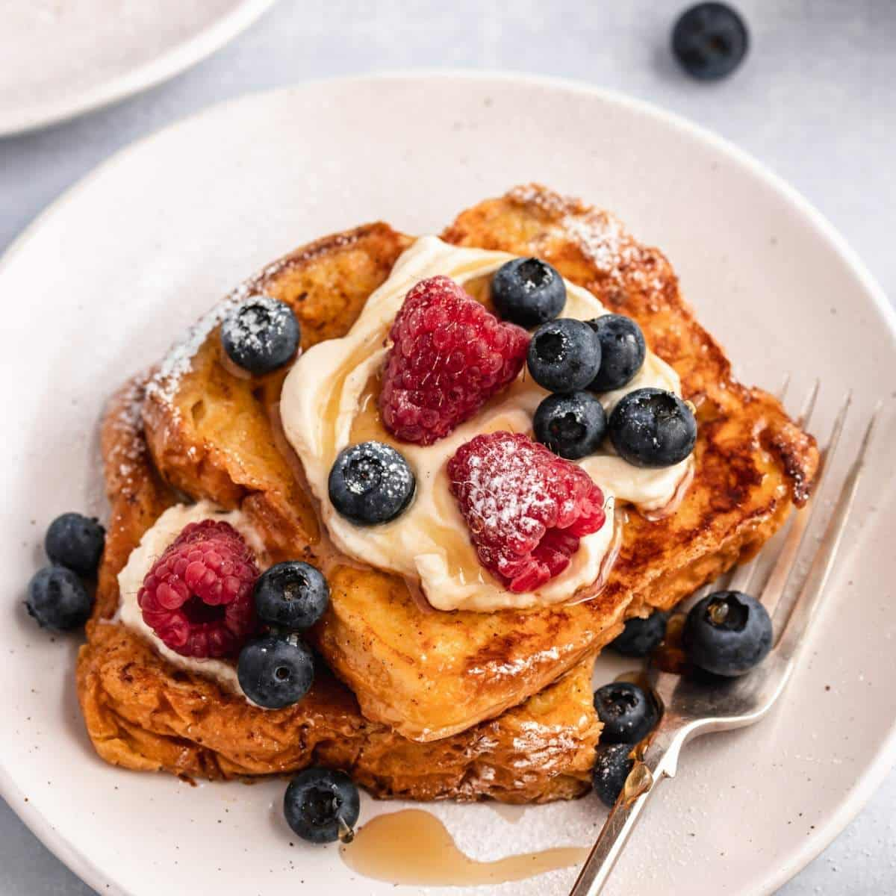

Classic Brioche French Toast
A delightful morning treat that is crispy on the edges and soft in the middle. Perfect for breakfasts!
There's nothing better than proper french toasts. This version uses brioche for a rich, tender bite that still gets that phenomenal scrumptiousness.

Recipe Details
- Prep Time: 10 mins
- Cook Time: 10 mins
- Servings: 2 people
- Difficulty: Easy
Ingredients
- 4 thick slices of Brioche bread
- 2 eggs
- 1/2 cup whole milk
- 1 teaspoon vanilla extract
- 1/2 teaspoon ground cinnamon
- 2 tablespoons unsalted butter
- Pinch of salt
Instructions
- In a shallow bowl, whisk together the eggs, milk, vanilla, cinnamon, and salt.
- Dip each slice of bread into the mixture, letting it soak for about 30 seconds per side.
- Melt butter in a large skillet over medium heat.
- Fry the bread until each side is golden brown (about 3-4 minutes per side).
- Serve immediately with maple syrup, fresh berries, or powdered sugar.
Chefs' Tips
Note: Use stale bread! Slightly dry bread absorbs the custard better without getting soggy.
Also, serve with any berry/ fruit/toasted nut and or whipped cream of your choice.
It feels like heaven when you wash it down with a natural fruit juice.
Nutrition Facts (Per Serving)
- Calories: 280kcal
- Total Fat: 12g
- Sugar: 6g